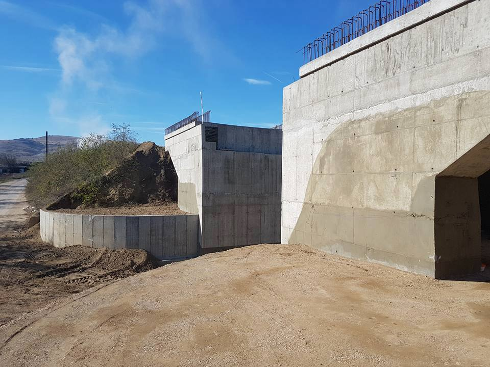

Projekti: Korridori VIII hekurudhor, Rehabilitimi i Seksionit Kumanovë-Belakovc.
Autoriteti kontraktues: Ndërmarrja publike Hekurudhat e Republikës së Maqedonisë së Veriut
Përshkrimi i projektit:
Seksioni hekurudhor nga Kumanova në Beljakovc është i gjatë 30.8 km, duke qenë i pari nga tre.
seksionet e përgjithshme të shinave hekurudhore përgjatë Korridorit të VIII Ndërkombëtar Hekurudhor, të cilat
duhet të lidhë Republikën e Maqedonisë me Republikën e Bullgarisë, duke filluar nga
Kumanovë, duke kaluar përmes Beljakovcës, Kriva Pallankës deri në Deve Bair, gjegjësisht në kufirin me
Republika e Bullgarisë.
Projektet e përfunduara


Projekti: Korridori VIII hekurudhor, Rehabilitimi i Seksionit Kumanovë-Belakovc



Projekti: Punimet e rinovimit të trasesë në Korridorin hekurudhor X të Seksioneve Nogaevci - Negotinë
Autoriteti kontraktues: Ndërmarrja publike Hekurudhat e Republikës së Maqedonisë së Veriut
Përshkrimi i projektit:
Ky projekt është pjesë e korridorit pan-evropian të Korridorit X me gjerësi 31 km, dhe me
Në rikonstruksionin e kësaj pjese synohet që trenat të lëvizin me shpejtësi më të madhe deri në 120 km/h.